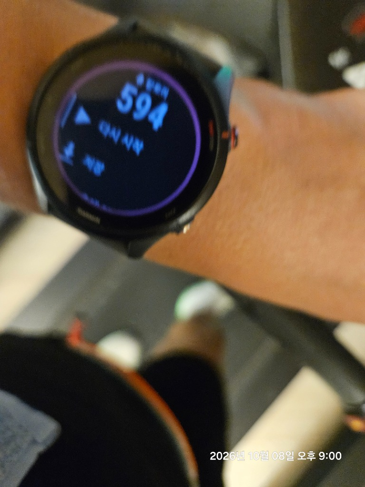

결론부터 말하면 러닝머신 계기판의 수치는 실제 에너지 소모량보다 약 15~25% 과대평가되어 있습니다. 시중의 트레드밀 모니터는 사용자의 심박수, 주행 효율성, 러닝 주법을 전혀 알지 못한 채 오직 '체중 × 거리 × 단순 계수'의 조잡한 산술 공식만 적용하기 때문입니다. 공기 저항의 부재와 벨트의 견인력이 만드는 물리적 대사 차이, 그리고 이를 야외와 동일하게 보정하는 '경사도 1.0%의 법칙'을 밝힙니다.

📸 실측 에셋: 트레드밀 완주 계기판 모니터: 10.02km를 52분에 완주했을 때 계기판은 684kcal 소모를 가리키지만, 호흡가스 분석기(VO2)로 실측한 체내 대사량은 약 570kcal 수준으로 약 16.6%의 과대 추정이 발생합니다.
1. 러닝머신 계기판이 칼로리를 뻥튀기하는 3가지 수학적·생리학적 원인
러닝머신 제조사들은 사용자에게 '운동 성취감'을 극대화하기 위해 다소 관대한 칼로리 환산 테이블을 탑재합니다.
⚠️ 트레드밀 계기판의 3대 계산 오류
- 기초대사량(BMR) 중복 포함: 아무것도 안 하고 숨만 쉬어도 소모되는 시간당 70~80kcal의 기초대사량이 운동 칼로리에 그대로 합산되어 표기됩니다.
- 러닝 이코노미(Running Economy) 무시: 숙련된 마라토너는 불필요한 상하 수직 진폭이 적어 에너지 소모가 적은 반면, 초보자는 몸을 흔들며 더 많은 에너지를 씁니다. 계기판은 두 사람을 완전히 같은 칼로리로 계산합니다.
- 손잡이(핸드레일) 지지 착시: 힘들어서 손잡이를 잡고 달릴 경우 다리에 실리는 부하가 30% 이상 줄어들지만, 계기판은 속도와 시간만 보므로 칼로리를 동일하게 카운트합니다.
2. 러닝머신 vs 야외 로드 러닝: 신체가 느끼는 3대 물리학적 차이
동일한 5분 00초(12.0 km/h) 페이스로 달릴 때, 실내 트레드밀은 야외 아스팔트보다 생체역학적으로 훨씬 '쉽게' 느껴집니다.
야외에서는 몸이 공기 분자를 밀어내며 전진해야 합니다. 시속 12~15km 이상 달릴 때 공기 저항을 극복하는 데 전체 에너지의 최대 8~12%가 소모됩니다. 제자리에서 뛰는 트레드밀은 이 저항이 0%입니다.
야외에서는 둔근과 햄스트링으로 지면을 차서 내 몸을 앞으로 밀어내야(Propulsion) 합니다. 하지만 트레드밀은 모터가 벨트를 뒤로 가져가 주므로, 발을 공중으로 들기만 해도 다음 착지가 이루어집니다.
3. 야외와 100% 동일한 부하를 만드는 '경사도 1.0%의 법칙'
스포츠 생체역학 분야의 기념비적 연구인 Jones & Doust (1996)의 논문은 트레드밀과 야외 러닝의 간극을 메우는 황금 기준을 확립했습니다.
📐 경사도 1.0% (Incline 1%) 세팅의 과학
트레드밀의 경사도를 1.0%로 올리면, 지면을 박차고 올라가는 중력 저항이 야외에서의 공기 저항(Air Resistance)과 에너지학적으로 정확히 일치합니다.
- 시속 10.5 km/h (5'43" 페이스) 이상 달릴 때는 반드시 경사도 1.0%를 유지해야 실제 야외와 동일한 심박수(HR)와 최대산소섭취량(VO2) 부하가 걸립니다.
- 경사도를 0%로 평평하게 두고 달릴 경우, 야외보다 페이스를 약 10~15초/km 가량 더 빠르게 세팅해야 동일한 운동 효과를 얻습니다.
4. 트레드밀 실측 칼로리 3초 보정법
🧮 현실적인 러너 칼로리 계산 공식
계기판 숫자 대신 아래의 운동생리학적 표준 공식을 적용하십시오:
* 체중 70kg 러너가 트레드밀에서 10km를 달렸다면: 70 × 10 × 0.9 = 약 630 kcal (계기판에 750이 찍혀도 630kcal로 계산하는 것이 정확합니다).
🏃 헬스장 러닝머신 속도(km/h) ⇄ 야외 페이스 1초 환산기
러닝머신 계기판 속도(km/h)와 경사도(0% vs 1.0%)를 입력하면, 야외 실전 목표 페이스와 1초 환산 결과를 즉시 확인해보세요.
🏃 트레드밀 ⇄ 야외 페이스 환산기 실행하기 ›- Jones, A. M., & Doust, J. H. (1996). A 1% treadmill grade reflects the energetic cost of outdoor running. Journal of Sports Sciences, 14(4), 321-327.
- Pugh, L. G. (1971). The influence of wind resistance on running and walking and the mechanical efficiency of work against horizontal or vertical forces. The Journal of Physiology, 213(2), 255-276.
- Miller, J. R., et al. (2019). Energy expenditure estimation during treadmill running using wearable sensors. Medicine & Science in Sports & Exercise, 51(5), 980-988.